About arc42
arc42, the template for documentation of software and system architecture.
Template Version 8.2 EN. (based upon AsciiDoc version), January 2023
Created, maintained and © by Dr. Peter Hruschka, Dr. Gernot Starke and contributors. See https://arc42.org.
1. Introduction and Goals
YOVI is a web platform for playing the game Y, developed by Micrati.
The system is designed for both human users and automated agents (bots). Its primary goals are to provide a smooth and engaging user experience when playing against an Artificial Intelligence (AI) with configurable board sizes and selectable difficulty levels, and to support real-time online multiplayer matches between human players through a matchmaking system.
YOVI consists of a React-based web frontend (running in the browser), an Auth Service (managing authentication and credentials), a Users Service (managing user profile data), a Game Service (handling match persistence, statistics, online matchmaking, and real-time sessions via Socket.IO), and a Rust-based Game Server (handling game logic and bot strategies). All backend services communicate via REST APIs using JSON messages, with YEN notation for game states, and are accessible through a single Nginx API Gateway.
This section summarizes the most relevant functional requirements from an architectural perspective.
1.1. Requirements Overview
The following table summarizes the main use cases of the system:
| Primary Actors | Use Case / Functionality | Description |
|---|---|---|
Player |
Play Game vs AI |
The player accesses the web application in their browser and starts a new game of Y against an AI bot. The React frontend displays a board with configurable size. The player takes turns placing pieces on the board. After each player move, the frontend sends the current game state in YEN notation to the Game Server via Nginx. The AI responds with its move, which is applied to the board and shown to the player. The Game Service persists each move in |
Player |
Online Multiplayer Match |
A registered player joins the online matchmaking queue through the React frontend. The Game Service searches for another available player. When two players are matched, a real-time session is created and both players are connected via Socket.IO. Each player takes turns placing pieces; the board state is broadcast in real time to both clients after every move. If no opponent is found within the configured timeout ( |
Player |
Turn Timeout and Bot Fallback |
During an online match, each player has a limited time to make their move ( |
Player |
Strategy Configuration |
Before or during a game, the player selects a game strategy for the AI and an associated difficulty level through the React UI. The system stores this configuration in the Game Service and uses it whenever it requests the next move from the Game Server. The game state and selected strategy are sent to the Rust Game Server, which calculates the move accordingly. |
Registered Player |
History and Statistics Management |
A registered player accesses their profile within the web application. The React frontend requests statistics from the Game Service via Nginx. The system retrieves information associated with the user from |
Player |
User Registration and Authentication |
A new player registers through the React frontend. The Auth Service receives the registration request, hashes the password, and stores the credentials in |
External Bot |
API for External Bots |
An external bot makes requests to the system API through Nginx to create games, check board state, or make moves. The bot sends the game state using YEN notation to the Game Server and receives responses in the same format. Authentication is handled by the Auth Service against |
System (Game Server) |
Move Validation and Suggestion |
The Game Server receives the current game state in YEN notation from the React frontend (via Nginx). The Rust module determines if the game has ended and, if not, calculates the optimal next move according to the selected strategy. The result is returned to the frontend to update the game board. The Game Server is completely stateless and has no database access. |
1.2. Quality Goals
The following table outlines the key quality attributes that are most important for the architecture of the YOVI system
| Quality Attribute | Description |
|---|---|
Performance |
The system must calculate moves and check victory conditions in suitable timeframes to ensure a smooth gameplay experience, even on variable-size boards. |
Scalability |
The system must support multiple concurrent games and users, allowing growth without major architectural redesigns. |
Maintainability |
The architecture should facilitate adding new strategies, Y game variants, or logic changes without impacting the rest of the system. |
Interoperability |
The system must allow integration with external clients through a well-defined, documented, and interface-independent API. |
Usability |
The web application should offer a clear and intuitive interface, enabling users to play games and consult information effortlessly. |
Security |
The system should protect backend services from direct external access, handle authentication properly, and ensure data integrity through controlled and isolated database access per service. |
Real-time Responsiveness |
Online multiplayer matches must propagate board state updates to all connected players with minimal latency, ensuring a seamless turn-based experience over WebSocket connections. |
1.3. Stakeholders
The table below identifies the main stakeholders of the YOVI system, along with their roles, contacts, and expectations regarding the architecture and the delivered solution.
| Role/Name | Contact | Expectations |
|---|---|---|
Micrati (Client) |
Micrati Company |
Delivery of a functional system that meets all requirements. |
Development Team |
UO302313@uniovi.es – David Fernando Bolaños Lopez UO294946@uniovi.es – Raúl Velasco Vizán UO301919@uniovi.es – Ángela Nistal Guerrero UO300731@uniovi.es – Olai Navarro Baizán UO301831@uniovi.es – Alejandro Requena Roncero |
Develop a robust solution, well-documented and easy to integrate. |
Players |
Application Users |
An attractive web interface, ability to check personal statistics, and AI/bots that provide a real challenge with fast response times and selectable difficulty levels. |
Professors |
Technical quality in code, a functional project, and coherent architectural documentation. |
2. Architecture Constraints
Before starting the design and implementation of YOVI, it is important to be aware of the constraints that will guide architectural decisions. These constraints reflect organizational limitations, technical choices, and mandatory practices that the development team must follow. Understanding them helps ensure that the architecture is feasible, maintainable, and aligned with project requirements.
2.1. Organizational Constraints
The following organizational constraints define the environment in which the YOVI system is developed.
| Constraint | Explanation |
|---|---|
Small team of 5 people |
The entire solution must be developed and maintained by a small team, so simplicity, modularity, and ease of integration are prioritized. |
Delivery deadlines |
The system must meet the deadlines set by the ASW project, including partial and final submissions. |
Mandatory testing |
Unit, integration, and end-to-end tests must be performed during development to ensure system quality. |
2.2. Technical Constraints
Technical constraints specify mandatory technologies, languages, and communication protocols that the system must adopt.
| Constraint | Explanation |
|---|---|
Frontend language: TypeScript |
The web application must be implemented in TypeScript, so client-side logic must adhere to this ecosystem. |
Frontend framework: React |
The web interface must be built using React, which influences component structure and state management. |
Game logic module language: Rust |
Victory checking and move suggestion are implemented in Rust, constraining the communication interface and available libraries. |
Communication via JSON / YEN notation |
All exchanges between the web application and the game logic module, as well as with the bot API, must use JSON messages in YEN format. |
Mandatory web deployment |
The application must be deployed and publicly accessible, influencing architecture design for web hosting and basic scalability. |
Data persistence |
Storage of users, games, and statistics is required, affecting database selection and backend organization. |
3. Context and Scope
Yovi is a distributed web application for playing the Y board game against bots or against other human players. The system combines a React frontend, a Node.js service layer, and a Rust game engine. Registered users can authenticate, maintain a profile, create matches, review their statistics, enter the online matchmaking queue, and play real-time matches through Socket.IO.
3.1. Business Context
3.1.1. Communication Partners
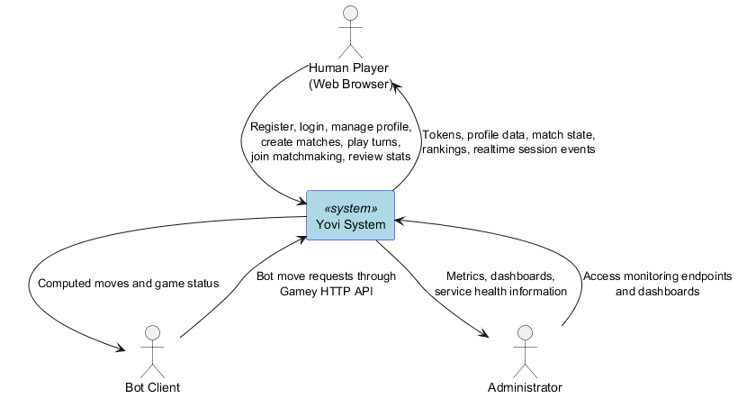
| Partner | Input | Output |
|---|---|---|
Human Player |
|
|
Bot Client |
|
|
Administrator |
|
|
3.1.2. Domain Concepts
-
YEN (Y-encoded Notation) is the canonical serialization for board state exchanged with the Rust engine.
-
Match is a persistent game record stored in
gamedb, with mode (BOT,LOCAL_2P,ONLINE), rules and outcome. -
Online Session is the live Redis-backed state used during human-vs-human play.
-
Matchmaking Queue is the Redis-backed waiting area that pairs compatible online players.
-
Ranking is the ELO-based leaderboard derived from finished ranked matches.
-
Bot Difficulty Alias maps user-facing levels (
easy,medium,hard,expert,expert_fast) to concrete engine bots.
3.2. Technical Context
3.2.1. System Landscape
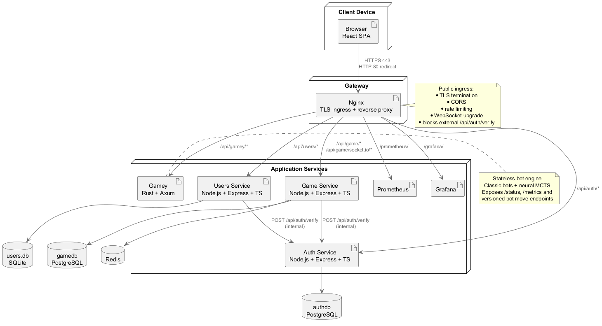
3.2.2. Technical Interfaces
| Connection | Technology | Channel | Purpose |
|---|---|---|---|
Browser → Nginx |
HTTPS, REST, Socket.IO |
|
|
Nginx → Auth Service |
HTTP |
|
|
Nginx → Users Service |
HTTP |
|
|
Nginx → Game Service |
HTTP + Socket.IO |
|
|
Nginx → Gamey |
HTTP |
|
|
Users Service → Auth Service |
Internal HTTP |
Docker network |
|
Game Service → Auth Service |
Internal HTTP |
Docker network |
|
Game Service → Redis |
Redis protocol |
|
|
Auth Service → authdb |
PostgreSQL |
|
|
Users Service → users.db |
SQLite |
local file |
|
Game Service → gamedb |
PostgreSQL |
|
|
3.2.3. Key API Endpoints
Authentication:
-
POST /api/auth/register -
POST /api/auth/login -
POST /api/auth/refresh -
POST /api/auth/logout -
POST /api/auth/logout-all -
POST /api/auth/verify(internal only, blocked externally by Nginx)
Users:
-
POST /api/users/profiles -
GET /api/users/profiles/by-username/:username -
GET /api/users/profiles/:id -
PUT /api/users/profiles/:id
Game Service:
-
POST /api/game/matches -
GET /api/game/matches/:id -
POST /api/game/matches/:id/moves -
PUT /api/game/matches/:id/finish -
GET /api/game/stats/:userId -
GET /api/game/rankings -
GET /api/game/rankings/:userId
Online play:
-
POST /api/game/online/queue -
GET /api/game/online/queue/match -
DELETE /api/game/online/queue -
GET /api/game/online/sessions/active -
GET /api/game/online/sessions/:matchId -
POST /api/game/online/sessions/:matchId/moves -
POST /api/game/online/sessions/:matchId/reconnect -
POST /api/game/online/sessions/:matchId/abandon -
Socket.IO events:
queue:join,queue:cancel,match:join,move:play,chat:message,queue:status,matchmaking:matched,session:state
Gamey:
-
GET /api/gamey/status -
POST /api/gamey/v1/ybot/choose/:botId -
POST /api/gamey/v1/ybot/play -
GET /api/gamey/metrics
3.2.4. Data Formats
Example YEN payload:
{
"size": 5,
"turn": 0,
"players": ["B", "R"],
"layout": "...../...../...../...../....."
}Example matchmaking request:
{
"boardSize": 9,
"rules": {
"pieRule": true,
"honey": false
}
}3.2.5. Deployment Considerations
-
The public surface is intentionally narrow: browser traffic enters through Nginx only.
-
Auth, users, game persistence and game computation are split into separate deployable services.
-
usersandgameservicedepend onauthfor token validation, so auth availability is part of the runtime security boundary. -
Redis contains only ephemeral online state; durable match history is always stored in
gamedb. -
Prometheus and Grafana are exposed through Nginx path prefixes (
/prometheus/and/grafana/) instead of direct public container ports.
4. Solution Strategy
4.1. Overview
The solution strategy is driven by four concerns:
-
keep game computation fast enough for interactive play,
-
isolate data and failures by domain,
-
centralize authentication semantics in one service,
-
make realtime online play observable and load-testable.
4.2. Main Strategic Decisions
| Decision | Why it is the chosen strategy |
|---|---|
Nginx as the only public ingress |
|
Separate Rust game engine ( |
|
Auth as the source of truth for token verification |
|
Polyglot persistence by domain |
|
Realtime online play in |
|
Testing and observability as first-class concerns |
|
4.3. Architectural Shape
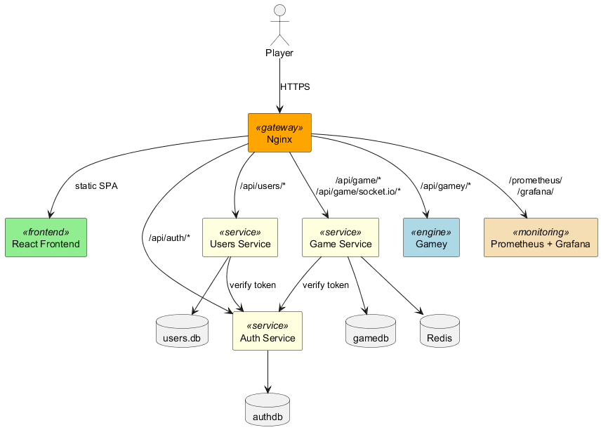
The architecture deliberately keeps responsibilities narrow:
-
the browser coordinates UX and initiates requests,
-
Nginx protects and routes,
-
Auth owns identity and tokens,
-
Users owns profiles,
-
Game Service owns persistence and realtime orchestration,
-
Gamey owns rules and bot computation,
-
Prometheus/Grafana expose operational evidence.
4.4. Internal Design Patterns
| Pattern | Usage in Yovi |
|---|---|
API Gateway |
Nginx routes |
Repository pattern |
|
Strategy pattern |
|
Event-driven realtime flow |
Socket.IO events ( |
Layered service structure |
Controllers handle transport concerns, services own business behavior, repositories own persistence, middleware owns cross-cutting concerns such as auth and error mapping. |
4.5. Quality Goal Mapping
| Quality Goal | Strategy | Concrete implementation |
|---|---|---|
Performance |
|
|
Security |
|
|
Maintainability |
|
|
Reliability |
|
|
Observability |
|
|
4.6. Constraints with Architectural Impact
| Constraint | Architectural consequence |
|---|---|
Rust is mandatory for the engine |
The game rules and bot logic live in a standalone service instead of being embedded into Node.js. |
YEN remains the engine contract |
Browser, Game Service and Gamey need conversion layers between stored match state and engine requests. |
The system must be deployable on the web |
TLS ingress, Dockerized services and static SPA delivery are required. |
The project must support both AI and online modes |
The solution combines durable match persistence with a separate realtime session model. |
Load and acceptance evidence are part of the deliverable |
Tests, coverage, load profiles, Grafana dashboards and Criterion benchmarks are documented as architecture evidence, not as afterthoughts. |
5. Building Block View
5.1. Whitebox Overall System
5.1.1. Overview Diagram
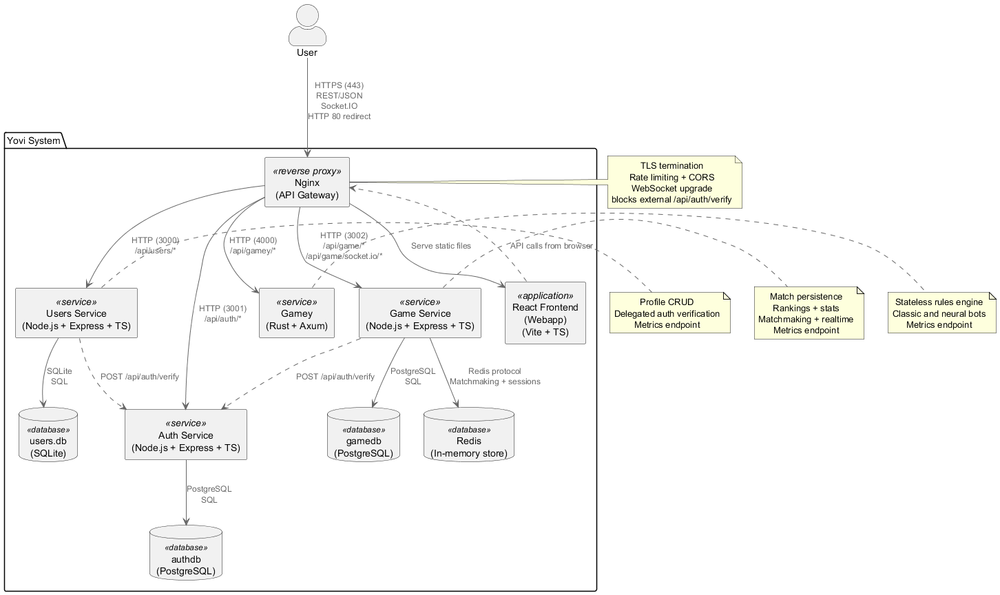
Motivation
The system is decomposed into focused subsystems so that persistence, realtime orchestration, authentication and game computation can evolve independently:
-
Nginx is the only public ingress and owns cross-cutting HTTP concerns.
-
React Frontend owns the browser UX and client-side orchestration.
-
Auth Service owns identity, credentials, refresh tokens and token verification.
-
Users Service owns profile data and delegates JWT validation to Auth Service.
-
Game Service owns durable game state, rankings, matchmaking and Socket.IO sessions.
-
Gamey owns Y rules and bot move computation and remains stateless.
-
Redis stores only transient online state.
Contained Building Blocks
| Building Block | Responsibility |
|---|---|
Nginx (API Gateway) |
|
React Frontend (Webapp) |
|
Auth Service |
|
Users Service |
|
Game Service |
|
Gamey |
|
Redis |
|
authdb |
|
users.db |
|
gamedb |
|
5.2. Level 2
5.2.1. White Box: Auth Service
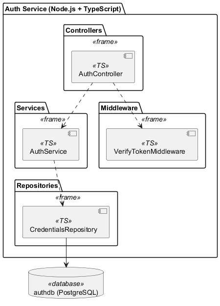
| Component | Responsibility |
|---|---|
AuthController |
|
AuthService |
|
CredentialsRepository |
|
VerifyTokenMiddleware |
|
5.2.2. White Box: Users Service
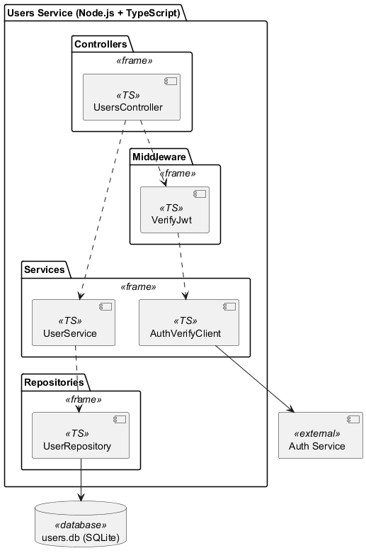
| Component | Responsibility |
|---|---|
UsersController |
|
UserService |
|
UserRepository |
|
VerifyJwt |
|
AuthVerifyClient |
|
5.2.3. White Box: Game Service
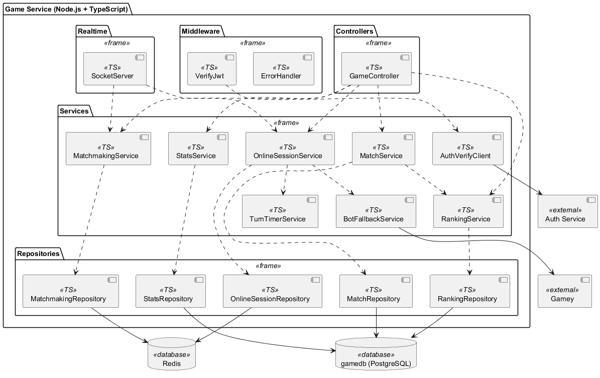
| Component | Responsibility |
|---|---|
GameController |
|
MatchService |
|
StatsService |
|
RankingService |
|
MatchmakingService |
|
OnlineSessionService |
|
TurnTimerService |
|
BotFallbackService |
|
VerifyJwt / AuthVerifyClient |
|
SocketServer |
|
5.2.4. White Box: Gamey
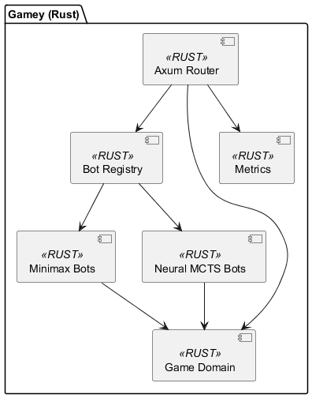
| Component | Responsibility |
|---|---|
Axum Router |
|
Bot Registry |
|
Minimax Bots |
|
Neural MCTS Bots |
|
Game Domain |
|
Metrics |
|
6. Runtime View
This section describes the main runtime collaborations across authentication, profile access, AI matches, realtime online play, rankings and timeout handling.
6.1. Runtime Scenario 1: Registration and Login
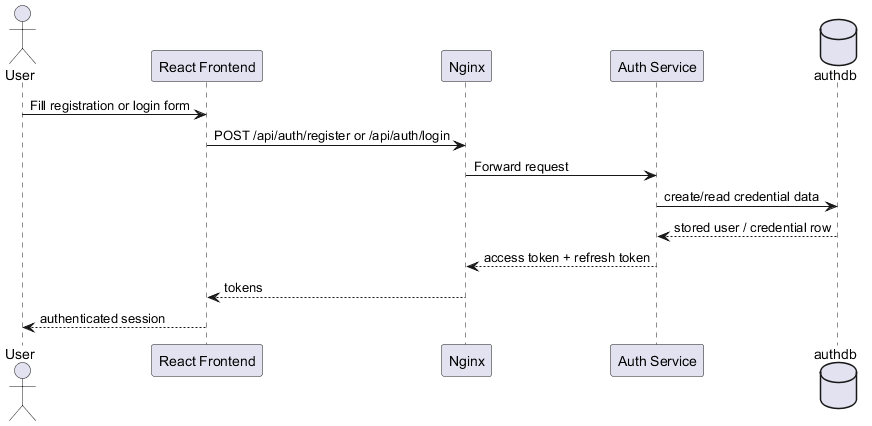
Notable aspects:
-
only Auth Service touches credentials,
-
token issuance is fully isolated from profile and match persistence,
-
Prometheus can observe latency and success rates through auth metrics.
6.2. Runtime Scenario 2: Authorized Profile Request
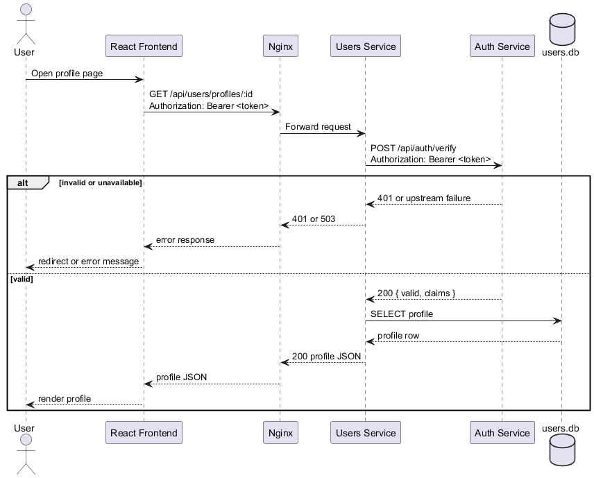
Notable aspects:
-
The auth decision is centralized in Auth Service.
-
Short auth timeouts prevent profile requests from hanging indefinitely.
6.3. Runtime Scenario 3: AI Match Creation and Persistence
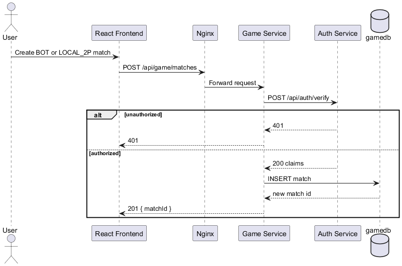
Notable aspects:
-
Game Service owns durable match creation,
-
the browser never talks directly to
gamedb, -
authorization is checked before any match write happens.
6.4. Runtime Scenario 4: Human Move Against a Bot
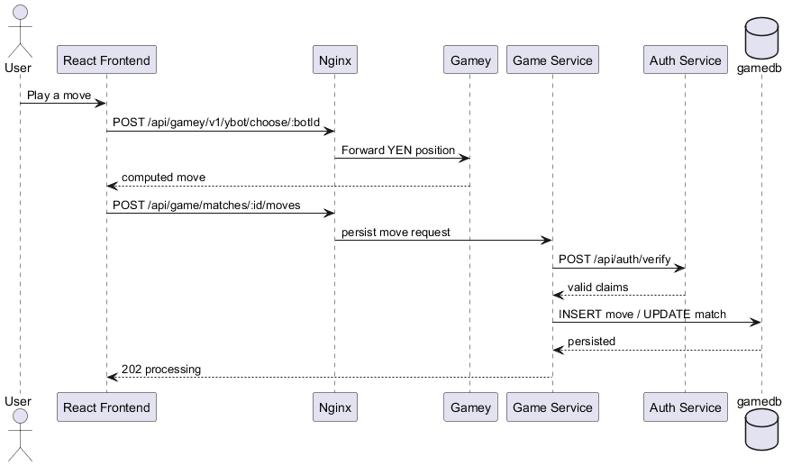
Notable aspects:
-
Gamey remains stateless and performs no persistence,
-
browser orchestrates the engine call and then persistence,
-
match state is durable only after Game Service accepts the move.
6.5. Runtime Scenario 5: Rankings and Statistics
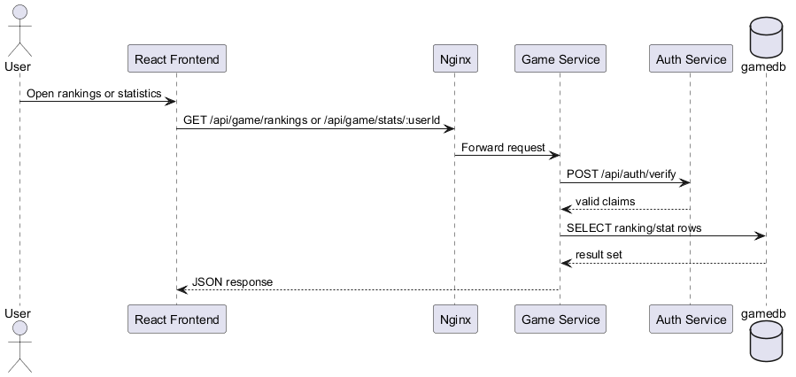
Notable aspects:
-
rankings and statistics are read from the same durable game store,
-
Game Service is the single API for leaderboard and history queries.
6.6. Runtime Scenario 6: Online Matchmaking and Session Join
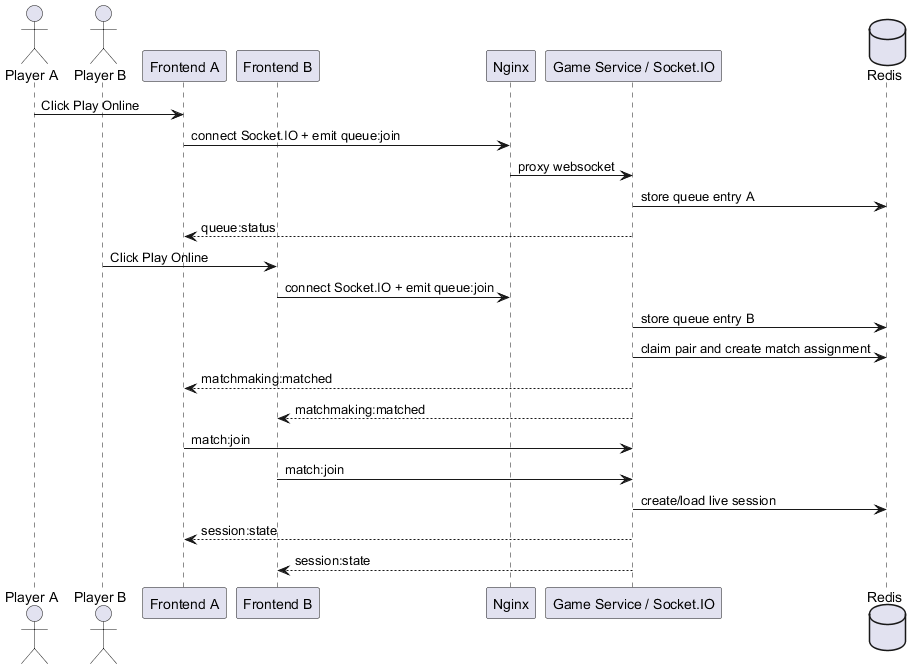
Notable aspects:
-
queue state is ephemeral and Redis-backed,
-
pairing and live-session creation happen inside Game Service,
-
REST polling remains available as a fallback through
/api/game/online/queue/match.
6.7. Runtime Scenario 7: Online Move, Chat and Reconnect
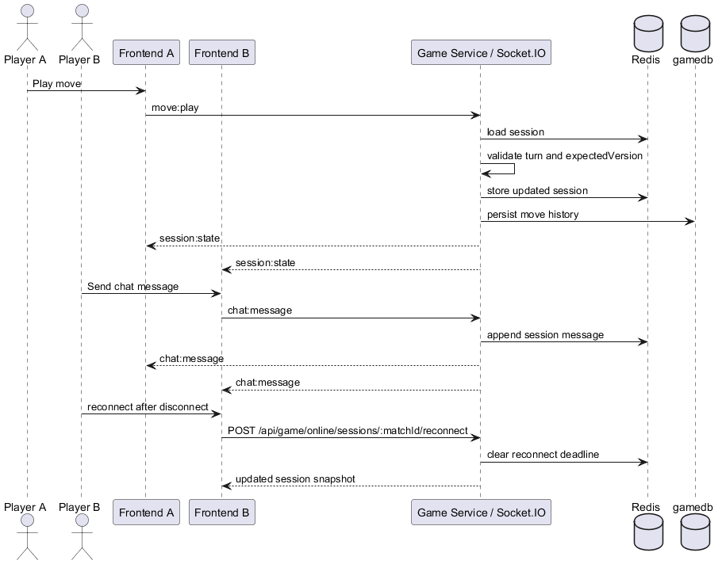
Notable aspects:
-
Redis stores the authoritative live session snapshot,
-
gamedbkeeps the durable move history, -
reconnect uses explicit session APIs and grace windows.
6.8. Runtime Scenario 8: Turn Timeout and Bot Fallback
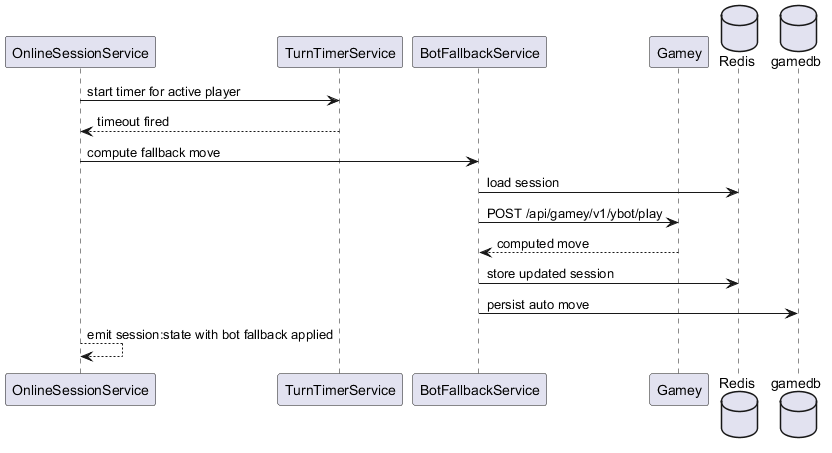
Notable aspects:
-
the timeout path reuses the same engine used for normal bot play,
-
automatic moves remain auditable because they are persisted,
-
reconnect grace is handled before timeout escalation.
7. Deployment View
The deployment view documents how Yovi is packaged and exposed in Docker-based environments. The same logical topology is used in local development and in the deployed stack.
7.1. Infrastructure Level 1: Production-Like Docker Topology
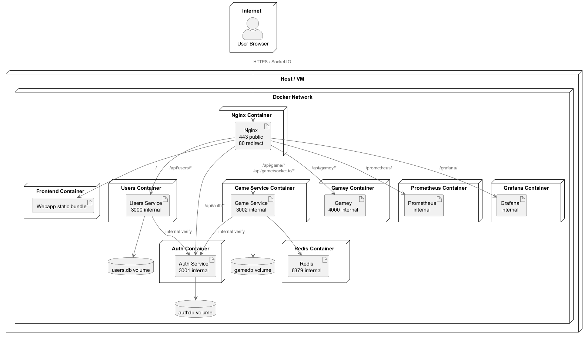
Why this topology
-
Nginx is the only public ingress.
-
Every backend service stays on the internal Docker network.
-
Monitoring is reachable through Nginx path prefixes instead of publishing extra public ports.
-
Redis is isolated to online features; durable state is stored only in PostgreSQL or SQLite volumes.
Mapping of building blocks to infrastructure
| Software Artifact | Infrastructure Mapping |
|---|---|
React Frontend |
Built as static assets and served by Nginx. No standalone public frontend server is exposed. |
Nginx |
Public container exposing |
Auth Service |
Internal Node.js container on port |
Users Service |
Internal Node.js container on port |
Game Service |
Internal Node.js container on port |
Gamey |
Internal Rust container on port |
Redis |
Internal in-memory container used only by Game Service for online queue, live sessions and Socket.IO adapter state. |
Prometheus |
Internal container scraping |
Grafana |
Internal container visualizing Prometheus data through the provisioned dashboards. |
7.2. Infrastructure Level 1: Development Environment
Development uses the same containerized topology, but normally on a developer workstation with Docker Desktop instead of a VM. This keeps service discovery, ports and internal URLs consistent with the deployed stack.
Key properties:
-
one-command startup through Docker Compose,
-
same reverse-proxy behavior as production,
-
same internal service names (
auth,users,gameservice,gamey,redis,prometheus,grafana), -
same load-test target topology for local
k6andArtillery.
7.3. Infrastructure Level 2: Internal Network and Observability
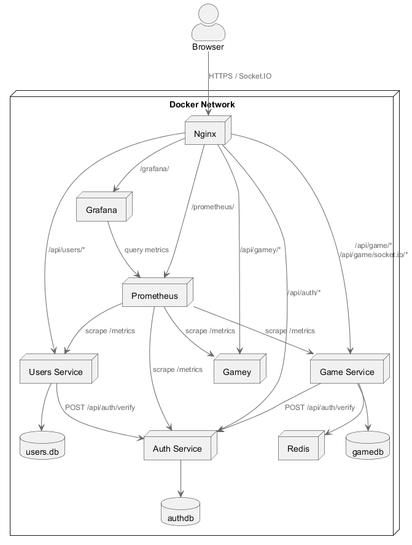
Internal structure explanation
-
AUTH_SERVICE_URLpoints fromusersandgameserviceto the internal auth container, not to Nginx. -
/api/auth/verifyis blocked at the gateway, so only internal service-to-service callers can use it. -
Socket.IO is proxied through
/api/game/socket.io/, which means websocket upgrade support is part of the gateway contract. -
All backend services export
/metrics; Prometheus scrapes them and Grafana consumes only Prometheus.
Operational consequences
-
If Redis restarts, online sessions and queue state are lost, but authentication, profiles and historical matches continue to work.
-
If Auth Service becomes unavailable, protected profile and game endpoints fail closed with
503rather than accepting unverifiable tokens. -
Gamey can be scaled independently because it is stateless and uses only HTTP plus a bundled model file.
8. Cross-cutting Concepts
8.1. Domain Model
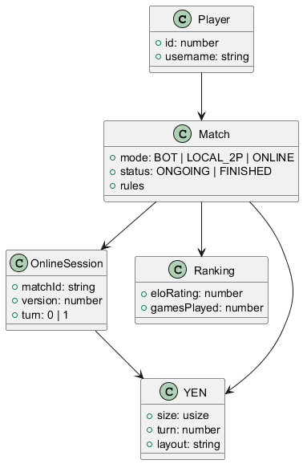
The central domain concepts are:
-
Player: authenticated user participating in matches and rankings,
-
Match: durable record of a game,
-
OnlineSession: live Redis-backed state for realtime play,
-
Ranking: ELO-based standing in competitive play,
-
YEN: contract used to send board state to the Rust engine.
8.2. User Experience Concepts
The browser experience follows a few stable rules:
-
authentication, profile, history, rankings and gameplay are reachable without changing applications,
-
bot matches are responsive and deterministic when forced lines exist,
-
online play uses realtime updates instead of polling as the primary experience,
-
reconnect and timeout behavior are explicit in the UI so players understand whether they are waiting for a human move or an automatic fallback.
8.3. Security Concepts
| Concept | How it is applied |
|---|---|
Single ingress |
Nginx is the only public entry point. Backend services stay on the internal Docker network. |
Centralized token verification |
Auth Service owns |
Fail closed |
If token verification fails or Auth Service is unavailable, protected requests return |
Data ownership |
Credentials stay in |
Gateway protection |
Nginx rate-limits public API traffic and blocks external |
8.4. Architecture and Design Patterns
-
Microservices: auth, users, gameservice and gamey are deployable services with explicit responsibilities.
-
Layered design: controllers, services, repositories and middleware are separated in the Node.js services.
-
Strategy pattern: Gamey resolves difficulty aliases to concrete bot strategies.
-
Event-driven realtime flow: Socket.IO is used for queue status, matchmaking, session state, chat and move propagation.
-
Gateway pattern: Nginx centralizes cross-cutting HTTP concerns.
8.5. Persistence Concepts
Durable and ephemeral data are intentionally separated:
-
authdbstores credentials and token metadata, -
users.dbstores profile data, -
gamedbstores matches, move history, rankings and statistics, -
Redis stores queue entries, live online sessions and Socket.IO adapter state.
This split allows online-state failures to be isolated from historical data and credentials.
8.6. Ranking Concept
Ranked results use an ELO model maintained by Game Service:
-
BOT matches use fixed bot ratings as the opponent reference,
-
ONLINE matches use the actual opponent rating at finish time,
-
LOCAL_2P matches do not update rankings,
-
ranking updates are best-effort relative to match completion: the match result is more important than the leaderboard write.
8.7. Testing and Verification Concept
Testing is treated as architecture evidence, not only as implementation support.
| Test family | Tools and scope |
|---|---|
Unit and integration |
Vitest in |
System / acceptance |
Cucumber + Playwright in |
Load testing |
k6 for REST flows and Artillery for Socket.IO flows, both documented in |
Benchmarks |
Criterion benchmarks in |
Regression diagnostics |
Service-specific auth middleware tests, matchmaking regression tests and Artillery smoke profiles for TLS and websocket validation. |
8.8. Observability Concept
The observability stack is based on Prometheus and Grafana:
-
every backend service exports
/metrics, -
Nginx exposes
/prometheus/and/grafana/, -
the provisioned Grafana overview dashboard includes service health, active games, socket connection peak, bot-move latency, matchmaking latency and HTTP request rate panels,
-
load tests and benchmarks are used to validate suspicious metrics before changing alert or dashboard semantics.
8.9. Error Handling Concept
Errors are normalized per layer:
-
the frontend turns backend failures into user-readable states,
-
Node.js services map domain errors to structured HTTP responses,
-
Socket.IO errors are emitted only to the affected session/client when appropriate,
-
Gamey returns structured HTTP failures for invalid requests and engine problems,
-
internal auth verification failures are surfaced as
503instead of leaking transport details.
9. Architecture Decisions
This section records the main accepted architectural decisions. Rejected options are kept inside each ADR as alternatives, so the trade-off is visible without duplicating mirror-image decisions.
9.1. ADR 1: Microservices by Domain Boundary
-
Context: The platform combines authentication, profiles, durable game history, realtime online play and compute-heavy bot logic. These concerns evolve at different speeds and fail in different ways.
-
Status: Accepted.
-
Alternatives: A monolithic backend, or a partially split backend with shared persistence.
-
Decision: Split the platform into Auth Service, Users Service, Game Service, Gamey, Webapp and Nginx. Each service owns a narrow responsibility and explicit interfaces.
-
Pros: Clearer ownership, better fault isolation, independent scaling paths, and cleaner separation between gameplay orchestration and engine logic.
-
Cons: More HTTP hops, more operational components, and more integration-testing effort across services.
-
Consequences: The backend is structured around explicit domain boundaries instead of a single application boundary.
9.2. ADR 2: Rust for the Game Engine
-
Context: Move computation and rules enforcement are the most performance-sensitive and correctness-sensitive part of the system.
-
Status: Accepted.
-
Alternatives: Implement the engine inside Node.js, or use another managed-language backend for bot logic.
-
Decision: Implement Gamey in Rust and expose it through a small HTTP API.
-
Pros: Strong memory safety, predictable performance, a clean benchmark boundary, and a good fit for search-heavy bot logic.
-
Cons: Steeper learning curve, separate build pipeline, and additional complexity around runtime model compatibility.
-
Consequences: Game rules and bot strategies are isolated inside Gamey and can be tuned independently from persistence and session orchestration.
9.3. ADR 3: Polyglot Persistence with Explicit Data Ownership
-
Context: Credentials, profiles, durable match history and live online sessions have different persistence needs.
-
Status: Accepted.
-
Alternatives: A single shared relational database, or a document database for all domains.
-
Decision: Use
authdb(PostgreSQL) for auth,users.db(SQLite) for profiles,gamedb(PostgreSQL) for matches and rankings, and Redis for ephemeral online state. -
Pros: Strong ownership boundaries, better fault isolation, persistence technology matched to domain needs, and clearer operational responsibilities.
-
Cons: More data stores to operate, no distributed transaction boundary, and more explicit cross-service coordination.
-
Consequences: Durable and ephemeral data are now separated by domain and lifetime instead of being administered as one shared persistence layer.
9.4. ADR 4: Nginx as the Only Public Ingress
-
Context: The system needs TLS termination, CORS, rate limiting, static frontend delivery, websocket proxying and path-based routing.
-
Status: Accepted.
-
Alternatives: Expose each service directly, or rely on a managed cloud API gateway.
-
Decision: Put Nginx in front of all services and expose only
443publicly, with80redirecting to HTTPS. -
Pros: Centralized ingress policy, smaller public attack surface, uniform TLS and websocket handling, and a single routing layer for the SPA and APIs.
-
Cons: One more critical component, and Nginx configuration becomes part of application correctness.
-
Consequences: Nginx now owns public ingress, blocks external
/api/auth/verify, and exposes monitoring through path prefixes.
9.5. ADR 5: Redis plus Socket.IO for Online Play
-
Context: Human-vs-human online matches need low-latency queueing and realtime bidirectional updates.
-
Status: Accepted.
-
Alternatives: REST polling only, SSE, or in-memory matchmaking without Redis.
-
Decision: Keep live queue and session state in Redis and use Socket.IO for queue, session and chat events. Nginx proxies the websocket path
/api/game/socket.io/. -
Pros: Low-latency updates, better user experience, scalable pub/sub through the Redis adapter, and lower pressure on
gamedbfor transient session state. -
Cons: Additional operational complexity, ephemeral state loss on Redis restart, and more difficult debugging of realtime flows.
-
Consequences: Online play is modeled as a Redis-backed live system plus durable persistence in Game Service.
9.6. ADR 6: Centralized JWT Verification in Auth Service
-
Context: Duplicating JWT parsing and validation rules across services creates drift, inconsistent failure behavior and duplicated security logic.
-
Status: Accepted.
-
Alternatives: Local JWT verification inside
usersandgameservice, or gateway-level authorization only. -
Decision: Auth Service exposes
/api/auth/verifyfor internal callers only.usersandgameservicecall it throughAUTH_SERVICE_URLand treat failures as401or503. -
Pros: One source of truth for token semantics, consistent claims validation, simpler security maintenance, and easier token-policy evolution.
-
Cons: Protected requests depend on Auth availability, add internal HTTP latency, and require careful timeout handling.
-
Consequences: Token semantics are centralized, and both profile and game APIs fail closed when verification cannot be completed.
9.7. ADR 7: Benchmark and Load Evidence as Architecture Assets
-
Context: Bot strength and latency regressions are easy to introduce and difficult to reason about from code inspection alone.
-
Status: Accepted.
-
Alternatives: Rely only on ad-hoc manual profiling and sporadic load runs.
-
Decision: Keep Criterion benchmarks, k6 profiles, Artillery profiles, Prometheus metrics and Grafana dashboards in the repository and reference them from the architecture documentation.
-
Pros: Measurable performance baselines, repeatable regression detection, better architectural traceability, and better incident diagnosis.
-
Cons: More maintenance effort, evidence must be kept fresh, and benchmark or metric interpretation requires discipline.
-
Consequences: Performance and load behavior are now documented as part of the architecture instead of being treated as informal operational knowledge.
10. Quality Requirements
The architecture is optimized around five quality attributes: performance, reliability, security, maintainability and observability.
10.1. Quality Tree
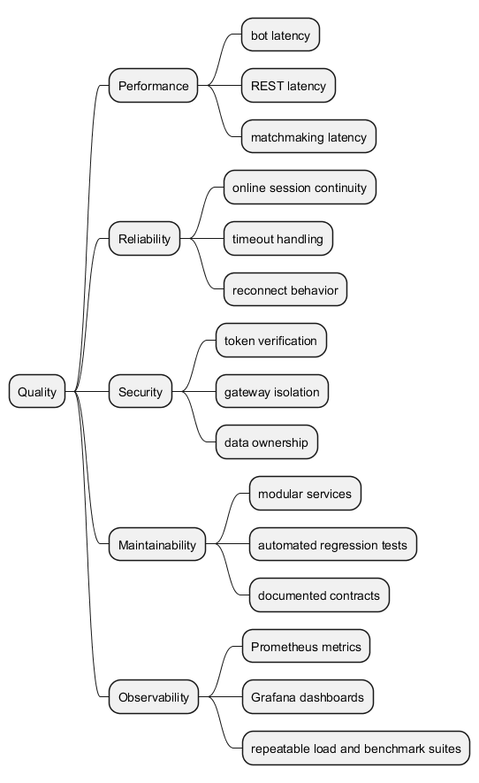
10.2. Quality Scenarios
| Attribute | Scenario | Metric / acceptance target |
|---|---|---|
Performance |
A user creates, reads, plays and finishes a local or bot-backed match through the REST API. |
Local k6 thresholds: create/finish p95 < |
Performance |
A user authenticates through the public API. |
Local k6 thresholds: register p95 < |
Performance |
A player joins and cancels matchmaking through REST fallback endpoints. |
Local k6 thresholds: queue join, poll, cancel and abandon p95 < |
Performance |
The Rust engine evaluates a board or batch for neural inference. |
Criterion benchmarks exist for |
Reliability |
Two players enter the online queue and complete the realtime flow under load. |
Artillery online profile should complete without websocket or response-timeout failures. Latest validated local run: |
Reliability |
A player disconnects or lets a turn expire. |
The session remains coherent through reconnect APIs and bot fallback. Timeout smoke profile completes without scenario failures. |
Security |
A protected game or profile endpoint receives a missing, invalid or unverifiable token. |
Request must fail closed with |
Security |
An external client attempts to call the internal verification endpoint. |
|
Maintainability |
A developer changes one domain without touching unrelated persistence code. |
Each service owns its own database and automated tests cover its public behavior. |
Observability |
The team needs to diagnose latency or load anomalies quickly. |
Prometheus metrics exist for auth, users, game service and gamey; Grafana overview exposes health, active games, socket peaks, bot latency and matchmaking latency. |
10.3. Supporting Measures
-
Load thresholds are versioned in
loadtests/k6/config.js. -
Realtime regression scenarios are versioned in
loadtests/artillery/*.yml. -
In-process performance evidence is versioned in
gamey/benches/gamey_benchmarks.rs. -
Coverage targets are tracked through
vitest --coverageandcargo test.
11. Risks and Technical Debts
11.1. Risks
| Area | Brief description | Mitigation | Prob. | Impact | Total |
|---|---|---|---|---|---|
Security and availability |
|
Keep short internal timeouts, small positive caches, clear |
2 |
3 |
6 |
Model compatibility |
Neural bots depend on an ONNX artifact that must stay compatible with the runtime loader. Training/export changes can produce models that fail at startup. |
Freeze export contracts, add model-load smoke checks, and keep benchmark fixtures tied to the same export format. |
2 |
3 |
6 |
Online ephemeral state |
Redis stores queue and live session state only. A Redis restart drops active online sessions even if durable match history remains intact. |
Keep reconnect and cleanup logic simple, document the limitation, and consider snapshot recovery only if the product scope requires it. |
2 |
2 |
4 |
Cross-service consistency |
Multi-step operations across auth, users and game data have no distributed transaction boundary. |
Prefer compensating actions, explicit ownership rules and end-to-end regression tests around the affected workflows. |
2 |
3 |
6 |
Performance on larger boards |
Stronger bots and neural paths can increase latency quickly as board size grows or search depth is increased. |
Keep Criterion benchmarks and Prometheus histograms under version control; gate strategy changes behind measured budgets. |
2 |
2 |
4 |
Operational drift |
Dashboards, load profiles and service behavior can drift apart, leading to misleading observability. |
Treat load tests and Grafana queries as code, rerun smoke suites after protocol changes, and document known metric semantics. |
2 |
2 |
4 |
11.2. Technical Debts
| Technical debt | Brief description |
|---|---|
Distributed user lifecycle |
User creation and eventual deletion span auth, users and game data without a saga or distributed transaction mechanism. |
Redis durability for online matches |
Online sessions are optimized for speed, not recovery. A full recovery story after Redis restart is not implemented. |
Model validation in CI |
Neural model export and runtime load compatibility are not yet enforced by a dedicated CI smoke stage. |
Load-test evidence freshness |
k6 thresholds are committed, but not every suite is rerun on every architecture change. Fresh execution evidence must be maintained deliberately. |
12. Test Report
This chapter consolidates the automated test evidence currently available in the repository and the latest validated execution results collected on 23 April 2026.
12.1. Scope
The project uses several complementary test families:
-
unit and integration tests in every service,
-
browser-level acceptance/system tests,
-
REST and Socket.IO load tests,
-
in-process performance benchmarks for the Rust engine,
-
targeted regression tests for auth verification, matchmaking and online timeout behavior.
12.2. Unit and Integration Tests
| Component | Command | Latest verified result | Notes |
|---|---|---|---|
Auth Service |
|
|
Covers auth flows, token verification and error handling. |
Users Service |
|
|
Includes the new centralized auth verification middleware regression tests. |
Game Service |
|
|
Covers match lifecycle, rankings, matchmaking, sessions and timeout logic. |
Webapp |
|
|
Covers hooks, components and browser-side orchestration. |
Gamey |
|
all test suites passed ( |
Includes core engine tests, API tests and property-based checks. |
12.3. Acceptance and System Tests
| Suite | Command | Latest verified result | Scope |
|---|---|---|---|
Webapp E2E |
|
|
Validates end-to-end browser flows through the Dockerized stack. |
12.4. Code Coverage
| Component | Statements | Branches | Functions | Lines |
|---|---|---|---|---|
Auth Service |
|
|
|
|
Users Service |
|
|
|
|
Game Service |
|
|
|
|
Webapp |
|
|
|
|
Interpretation:
-
authandwebappalready have very strong coverage, -
usersandgameservicehave good practical coverage, but still benefit from continued branch-focused testing on failure paths and uncommon flows.
12.5. Load Tests
12.5.1. Load Suites in the Repository
| Tool | Covered scope |
|---|---|
k6 |
Auth flows, game REST flows, matchmaking REST fallback, response-time thresholds and failure-rate thresholds. |
Artillery |
Socket.IO matchmaking, online session join, chat and timeout scenarios, including local self-signed TLS variants. |
12.5.2. Latest Validated Load Evidence
| Suite | Latest validated result | Interpretation |
|---|---|---|
Artillery online profile |
|
Confirms that the fixed matchmaking flow now sustains the full online scenario without websocket/session failure. |
Artillery online profile timing |
session length mean |
Gives an end-to-end wall-clock baseline for the realtime online scenario. |
Artillery timeout smoke |
|
Confirms the timeout path and fallback wiring are functional after the websocket/TLS fixes. |
12.5.3. Threshold Baseline for k6
The REST load suites define acceptance thresholds in loadtests/k6/config.js. The most relevant local thresholds are:
-
auth: register p95
< 1500 ms, login/refresh p95< 1200 ms, -
game: create/finish p95
< 800 ms, get p95< 500 ms, move p95< 2000 ms, -
matchmaking: queue join/poll/cancel/abandon p95
< 800 ms, -
common thresholds: HTTP failure rate
< 5%, checks success rate> 95%.
12.6. Criterion Benchmarks
| Benchmark | Latest verified result | Meaning |
|---|---|---|
|
about |
Cached single-board evaluation is effectively negligible compared with network or search overhead. |
|
about |
Cold single-board neural inference is the meaningful lower bound for uncached evaluation cost. |
|
about |
Cached batch path stays very cheap and is suitable for repeated search reuse. |
|
about |
Cold batch inference is substantially more expensive and must stay out of latency-sensitive paths unless amortized. |
These benchmarks are now explicit in gamey_benchmarks.rs, which makes performance regressions in evaluate and evaluate_batch directly visible in Criterion reports.
12.7. Other Tests and Diagnostics
-
usersnow includes dedicated regression tests for the Auth-service-backed JWT verification middleware and protected profile routes. -
gameserviceincludes a regression test for creating multiple human matches in a single matchmaking tick. -
gameyincludes property-based tests (proptest) as part ofcargo test. -
Grafana dashboards and Prometheus metrics provide runtime validation for active games, socket peaks, bot latency and matchmaking latency.
12.8. Assessment
The current test evidence supports the main architectural claims:
-
the service boundaries are exercised by unit/integration tests,
-
the browser flow is exercised by E2E tests,
-
the realtime online flow has fresh post-fix load evidence,
-
the Rust engine has repeatable micro-benchmarks for the critical neural evaluation paths.
The main remaining gap is keeping full REST load evidence as fresh as the realtime evidence after substantial backend changes.
13. Glossary
| Term | Definition |
|---|---|
API Gateway |
Architectural component that serves as the single public entry point, routing client requests to backend services and managing cross-cutting concerns such as CORS, rate limiting, and WebSocket proxying |
Nginx |
Web server and reverse proxy used to implement the API Gateway pattern in this system |
Anonymous Play |
Game mode where unregistered users can play against the AI without persisting their statistics or match history |
Arc42 |
Architecture documentation template followed in this project for structural consistency |
Barycentric Coordinates |
Coordinate system (x, y, z) used to represent positions on the hexagonal game board |
Board |
Hexagonal grid representing the Y game playing surface |
Bot Client |
External automated agent that plays through the system’s Bot API |
Bot Fallback |
Mechanism triggered by |
CORS (Cross-Origin Resource Sharing) |
HTTP-header based mechanism that allows a server to indicate which origins are permitted to access its resources from a browser |
Docker |
Containerization platform used for packaging and deploying all system services |
Game Server |
Rust-based microservice responsible for core game logic, move validation, and bot AI strategies. Completely stateless and has no database access. |
Game Service |
Node.js microservice responsible for match persistence, move history, player statistics, online matchmaking, and real-time session management via Socket.IO. Single point of access to |
Match |
Game session between two players (human or bot) with a specific board size and strategy configuration |
Matchmaking |
Process by which the Game Service pairs two human players waiting in the Redis-backed queue to start an online session. If no opponent is found within |
Microservices |
Distributed architecture pattern where the system is decomposed into independent services (React Frontend, Nginx, Auth Service, Users Service, Game Service, Game Server), each owning its own data store |
Move/Movement |
Player action placing a piece at specific coordinates on the board |
Online Session |
A real-time multiplayer match between two human players (or a human and a bot fallback), managed by the Game Service via Socket.IO. Session state is stored in Redis for low-latency access during play. |
PlantUML |
Tool used for generating architectural diagrams throughout the documentation |
Redis |
In-memory data store used exclusively by the Game Service to persist the matchmaking queue and active online session snapshots, and to act as the pub/sub adapter for Socket.IO |
Registered Player |
User with an account who can access match history, statistics, and online multiplayer features |
Reverse Proxy |
Server (Nginx) that forwards client requests to appropriate backend services and returns responses |
Socket.IO |
Library providing WebSocket-based bidirectional communication between the React Frontend and the Game Service. Used to broadcast real-time board state updates, turn notifications, timeout events, and game-over signals to all players in an online session. |
PostgreSQL |
Relational database used by Auth Service ( |
SQLite |
Embedded relational database used by Users Service for profile persistence ( |
Stateless Service |
Service that does not maintain persistent state between requests (e.g., Game Server). All state is passed in each request or stored externally. |
Strategy |
AI difficulty level and bot behavior configuration (e.g., random, heuristic, neural network) |
Turn Timeout |
Maximum time ( |
Upstream |
Nginx configuration directive defining a group of backend servers that can handle requests (e.g., users_backend, gamey_backend) |
Users Service |
Node.js microservice responsible for managing user profile data. Single point of access to |
WAL (Write-Ahead Logging) |
SQLite journaling mode that improves concurrent reads/writes in Users Service storage |
Win Checker |
Algorithm that detects Y-shaped winning connections on the board to determine game outcome |
YBot |
Rust trait/interface defining the contract for bot strategy implementations |
YEN (Y-Encoded Notation) |
Domain-specific format for representing board positions and moves in the Y game, used for inter-service communication between the React Frontend, Game Service, and Game Server |
YGN (Y Game Notation) |
Alternative notation format supported by the Game Server for recording complete game sequences, used for match replay and history export |